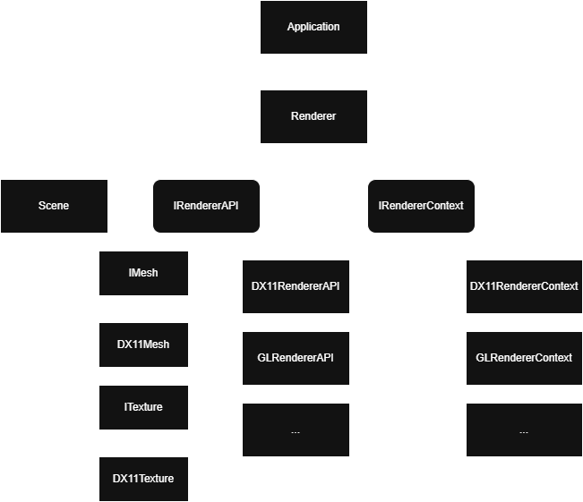
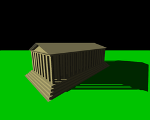
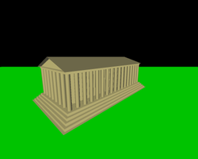
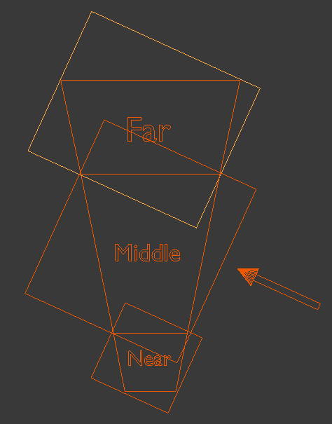
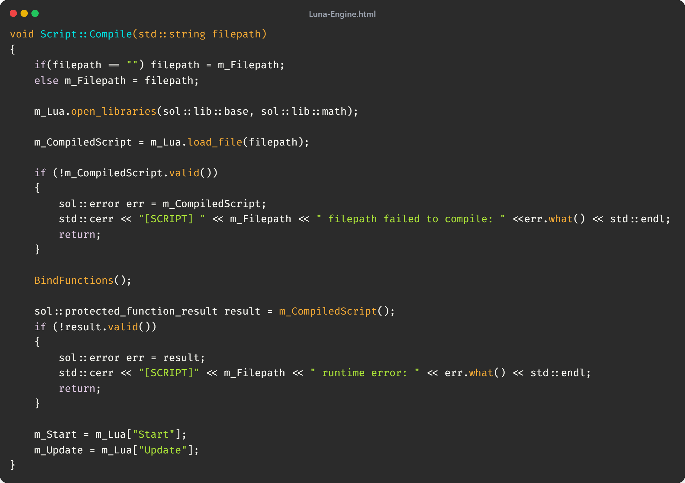
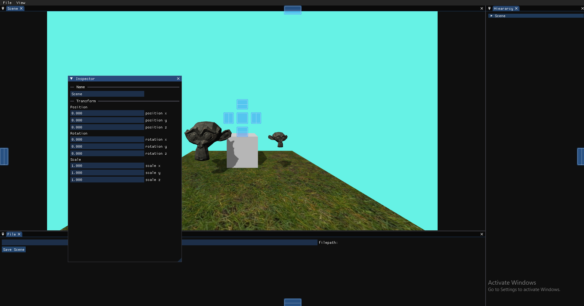

Luna Engine
Building a 3D Game Engine
This is my 3D game engine built using C++. It is still frequently built upon, but already features core aspects of engine architecture commonly utilized in many modern game engines. This is a long-term passion project of mine, which serves as a sandbox for learning new libraries and algorithms.
Entity Component System (ECS)
This game engine functions on an ECS, where game objects are composed of numerous components, using the game object's ID to reference grouped components. This approach is far superior in terms of cache friendliness, as the CPU can load the array of components as contiguous chunks of memory instead of individually grabbing each piece of data.
These components are then used by whatever system needs them. For example, the Rendering System would need access to a list of the mesh components and the transform components.

API-Agnostic Render Architecture
During my Realtime Rendering module, I was allowed to rework my render pipeline to support DirectX 11. Instead of a simple port, I chose to design an API-agnostic architecture; making it easier to integrate additional backends like OpenGL in the future without major rewrites.
My approach was to define interfaces for core graphical objects such as Meshes and Textures, alongside a higher-level Render API interface responsible for combining and managing API-specific operations like constant buffer and uniform handling as shown above.
Currently, the engine only supports DirectX 11, but I plan to expand it in the future to include other graphics APIs such as OpenGL and to experiment with more modern options like Vulkan and DirectX 12.
Cascading Shadow Mapping
The first effect I built on top of this game engine where shadows. To achieve this effect, I utilised shadow mapping, a technique where the scene is rendered from the perspective of the light.
However, unlike when rendering the scene to the camera, we are only interested in the pixel's distance from the camera, which is conveniently stored for us in the Z depth buffer. This buffer is then sampled to calculate whether the pixel currently being rendered in the shader is hidden from the light source or not.
Pure shadow mapping with no optimisations, however, can have a very costly hit to performance. If you want more defined shadows when zooming in close without having an insanely high resolution shadow buffer texture, then a more complex method is required - Cascading Shadow Mapping
CSM allows the lighting matrices to change depending on the distance between the camera and the given pixel, focusing the shadow buffer texture to the limits of the view frustum. This allows us to create higher quality shadows without increasing the resolution of the shadow textures.
Scene Graph
The engine uses a Scene Graph to define parent–child relationships between objects. This allows transformations such as position, rotation, and scale to automatically propagate from a parent to its children, making it easy to build complex objects from smaller parts (e.g., a car body with wheel entities attached).
The Scene Graph works alongside the ECS: entities still hold their own components, but their local transforms are resolved into world transforms through the hierarchy. This ensures efficient rendering and physics updates while keeping the engine flexible and easy to extend.

Scripting
The engine also features Lua Scripting, allowing users to write and maintain code to create complex gameplay features. I am currently using Sol2 bindings to allow the game engine to interact with script files, which greatly simplifies the process of compiling and running scripts. Whilst developing the scripting feature, I tested numerous other languages such as python and C#, however found that Lua fit the lightweight style i was looking for.
Scripts are treated as an asset, being stored in the asset manager and, similarly to mesh's, are referenced in a dedicated component; ScriptComponent. This allows me to access the corresponding scripts for each object. Only one instance of a script is active at a time, and it just passes the object ID of which object should be affected by the changes being made in the script. Currently, an object can only have 1 script at a time, but i hope to find a work around to this issue soon.
Below is the code for loading different scripts. A lot of the code is error checking, due to the nature of scripting languages. In sol, calling a stored function is no different to calling a standard c++ function.
ImGui Integration
The engine includes Dear ImGui for creating in-engine tools and debug interfaces. ImGui makes it easy to inspect data, display performance stats, and tweak values such as lighting or camera settings in real time without restarting or recompiling the engine.
I have also set up ImGui’s docking and viewport features, allowing windows to be rearranged and even popped out into separate windows, similar to professional editors. This provides a flexible foundation for building a scene editor and other development tools directly inside the engine.
